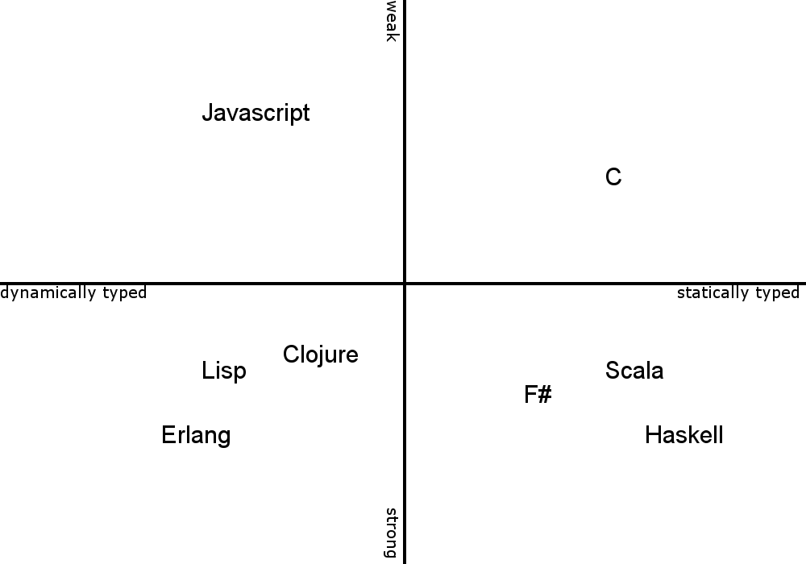
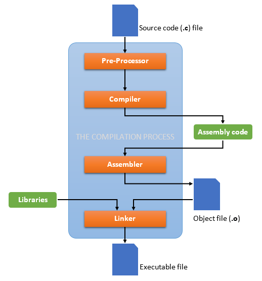

class: center, middle # Introduce C <h3 style="color: gray">Presented by Tae Geun Kim</h3> --- # Table of Contents 1. Why C? 2. History of C 3. Characteristics of C 4. Basics of C Programming 5. Practice --- class: center, middle # Why C? --- ## Why C? Learning programming is same as learning how to talk -- * Difficult to talk first time -- * But once we know how to talk, then easy to learn other different languages. -- Then Why C? -- * To learn how to program an OOP or FP is a bit too extreme for those who want to learn how to write computer programs for scientific applications. -- * If you master C, then you can also understand C++ -- * And C has extreme performance --- class: center, middle # History of C --- ## Timeline of C -- * BCPL - Richards (1967) -- * B Language - Ken Thompson (1970) -- * C Language - Dennis Ritchie (1972) -- * K & R - Brian Kerninghan & Dennis Ritchie (1988) -- * ANSI-C - ANSI (1983) -- * C99 - ISO/IEC 9899:1999 (1999) -- * ANSI Chose C99 - ANSI (2000) -- * C11 - ISO/IEC 9899:2011 (2011) --- class: center, middle # Characteristics of C --- ## Characteristics of C -- * C is a procedural language, not fully structured and typed -- * C is weakly typed language -- <p style="text-align:center"></p> --- ## Characteristics of C * C Compile Process is below : -- <p style="text-align: center"></p> --- class: center, middle # Basics of C Programming --- ## Types <table id="tab01" align="center"> <tr> <th>Type</th> <th>Variable</th> <th>Number of bits</th> </tr> <tr> <td><font face="Ubuntu Mono">char</font></td> <td>character</td> <td>8</td> </tr> <tr> <td><font face="Ubuntu Mono">short</font></td> <td>integer</td> <td>16</td> </tr> <tr> <td><font face="Ubuntu Mono">int</font></td> <td>integer</td> <td>32</td> </tr> <tr> <td><font face="Ubuntu Mono">long</font></td> <td>integer</td> <td>32</td> </tr> <tr> <td><font face="Ubuntu Mono">long long int</font></td> <td>integer</td> <td>64</td> </tr> <tr> <td><font face="Ubuntu Mono">float</font></td> <td>rational</td> <td>32</td> </tr> <tr> <td><font face="Ubuntu Mono">double</font></td> <td>rational</td> <td>64</td> </tr> <tr> <td><font face="Ubuntu Mono">long double</font></td> <td>rational</td> <td>96</td> </tr> </table> --- ## Operators - Arithmetic <table id="tab01" align="center"> <tr> <th>Operation</th> <th>Expression</th> <th>Overloadable</th> </tr> <tr> <td>addition</td> <td><font face="Ubuntu Mono">a + b</font></td> <td>Yes</td> </tr> <tr> <td>subtraction</td> <td><font face="Ubuntu Mono">a - b</font></td> <td>Yes</td> </tr> <tr> <td>product</td> <td><font face="Ubuntu Mono">a * b</font></td> <td>Yes</td> </tr> <tr> <td>division</td> <td><font face="Ubuntu Mono">a / b</font></td> <td>Yes</td> </tr> <tr> <td>modulus</td> <td><font face="Ubuntu Mono">a % b</font></td> <td>Yes</td> </tr> <tr> <td>increment(pre)</td> <td><font face="Ubuntu Mono">++a</font></td> <td>Yes</td> </tr> <tr> <td>increment(post)</td> <td><font face="Ubuntu Mono">a++</font></td> <td>Yes</td> </tr> <tr> <td>decrement(pre)</td> <td><font face="Ubuntu Mono">--a</font></td> <td>Yes</td> </tr> <tr> <td>decrement(post)</td> <td><font face="Ubuntu Mono">a--</font></td> <td>Yes</td> </tr> <tr> <td>negation</td> <td><font face="Ubuntu Mono">-a</font></td> <td>Yes</td> </tr> </table> --- ## Operators - Relational <table id="tab01" align="center"> <tr> <th>Operator</th> <th>Relation</th> <th>Overloadable</th> </tr> <tr> <td><font face="Ubuntu Mono">></font></td> <td>Larger than</td> <td>Yes</td> </tr> <tr> <td><font face="Ubuntu Mono">>=</font></td> <td>Larger than or equal to</td> <td>Yes</td> </tr> <tr> <td><font face="Ubuntu Mono"><</font></td> <td>Smaller than</td> <td>Yes</td> </tr> <tr> <td><font face="Ubuntu Mono"><=</font></td> <td>Smaller than or equal to</td> <td>Yes</td> </tr> <tr> <td><font face="Ubuntu Mono">==</font></td> <td>Equal to</td> <td>Yes</td> </tr> <tr> <td><font face="Ubuntu Mono">!=</font></td> <td>Not equal to</td> <td>Yes</td> </tr> </table> --- ## Operators - Logical <table id="tab01" align="center"> <tr> <th>Operator</th> <th>Symbol</th> <th>Overloadable</th> </tr> <tr> <td>AND</td> <td><font face="Ubuntu Mono">&&</font></td> <td>Yes</td> </tr> <tr> <td>OR</td> <td><font face="Ubuntu Mono">||</font></td> <td>Yes</td> </tr> <tr> <td>NOT</td> <td><font face="Ubuntu Mono">!</font></td> <td>Yes</td> </tr> </table> --- ## I/O ### Example : Unit Conversion ```c #include <stdio.h> int main() { double tc, tf, offset, conv; offset = 32; conv = 5. / 9.; printf("Value in degrees Fahrenheit = "); scanf("%lf", &tf); tc = (tf - offset) * conv; printf("Value in degree Celsius = %f", tc); } ``` --- ### Printf format specifier <table id="tab01" align="center"> <tr> <th>Format Specifier</th> <th>Description</th> </tr> <tr> <td><font face="Ubuntu Mono">%c</font></td> <td><font face="Ubuntu Mono">char</font> (single)</td> </tr> <tr> <td><font face="Ubuntu Mono">%s</font></td> <td><font face="Ubuntu Mono">char</font> (string)</td> </tr> <tr> <td><font face="Ubuntu Mono">%d,%i</font></td> <td><font face="Ubuntu Mono">int</font></td> </tr> <tr> <td><font face="Ubuntu Mono">%f</font></td> <td><font face="Ubuntu Mono">float,double</font></td> </tr> <tr> <td><font face="Ubuntu Mono">%e</font></td> <td><font face="Ubuntu Mono">float,double</font> (scientific)</td> </tr> <tr> <td><font face="Ubuntu Mono">%g</font></td> <td><font face="Ubuntu Mono">flaot,double</font> (shorter)</td> </tr> </table> --- ### Scanf format specifier <table id="tab01" align="center"> <tr> <th>Format Specifier</th> <th>Description</th> </tr> <tr> <td><font face="Ubuntu Mono">%c</font></td> <td><font face="Ubuntu Mono">char</font> (single)</td> </tr> <tr> <td><font face="Ubuntu Mono">%s</font></td> <td><font face="Ubuntu Mono">char</font> (string)</td> </tr> <tr> <td><font face="Ubuntu Mono">%d,%i</font></td> <td><font face="Ubuntu Mono">int</font></td> </tr> <tr> <td><font face="Ubuntu Mono">%u</font></td> <td><font face="Ubuntu Mono">unsigned int</font></td> </tr> <tr> <td><font face="Ubuntu Mono">%Lu</font></td> <td><font face="Ubuntu Mono">unsigned long long int</font></td> </tr> <tr> <td><font face="Ubuntu Mono">%f</font></td> <td><font face="Ubuntu Mono">float</font></td> </tr> <tr> <td><font face="Ubuntu Mono">%lf</font></td> <td><font face="Ubuntu Mono">double</font></td> </tr> <tr> <td><font face="Ubuntu Mono">%Lf,%llf</font></td> <td><font face="Ubuntu Mono">long double</font></td> </tr> </table> --- ## Preprocessor Directives * What is it? : Starts with `#` (ex: `#include, #define ...`) -- * Why use it? : define constant, no memory operation, divide Characteristics -- For Example * `#define G 9.81` -- * `#define MASS_E 0.51` -- * `#define SUMQ(a, b) ((a * a) + (b * b))` --- ### Example ```c #include <stdio.h> #define TF2TC int main() { double tc, tf, offset, conv; offset = 32; #ifdef TF2TC conv = 5. / 9.; printf("Value in degrees Fahrenheit = "); scanf("%lf", &tf); tc = (tf - offset) * conv; printf("Value in degrees Celsius = %f\n", tc); #endif #ifndef TF2TC conv = 9. / 5.; printf("Value in degrees Celsius = "); scanf("%lf", &tc); tf = tc * conv + offset; printf("Value in degrees Fahrenheit = %f\n", tf); #endif } ``` --- ## Math library -- * Usage: `#include <math.h>` -- <table id="tab01" align="center"> <tr> <th>Function name</th> <th>Operation</th> </tr> <tr> <td><font face="Ubuntu Mono">sqrt(x)</font></td> <td>\(\sqrt{x}\)</td> </tr> <tr> <td><font face="Ubuntu Mono">pow(x,y)</font></td> <td>\(x^y\)</td> </tr> <tr> <td><font face="Ubuntu Mono">exp(x)</font></td> <td>\(e^{x}\)</td> </tr> <tr> <td><font face="Ubuntu Mono">log(x)</font></td> <td>\(\ln{x}\)</td> </tr> <tr> <td><font face="Ubuntu Mono">sin(x)</font></td> <td>\(\sin{x}\)</td> </tr> <tr> <td><font face="Ubuntu Mono">cos(x)</font></td> <td>\(\cos{x}\)</td> </tr> <tr> <td><font face="Ubuntu Mono">tan(x)</font></td> <td>\(\tan{x}\)</td> </tr> <tr> <td><font face="Ubuntu Mono">fabs(x)</font></td> <td>\(|x|\)</td> </tr> </table> --- class: center, middle # Practice --- ### Launching a mass in gravitational field -- * Velocity -- $$ v_x = v_0 \cos{\theta} $$ $$ v_y = v_0 \sin{\theta} - gt $$ -- * Distance -- $$ S_x = v_x t$$ $$ S_y = v_y t - \frac{1}{2}gt^2 $$ --- ### Let's Implement ```c #include <stdio.h> #include <math.h> #include <stdlib.h> #define G 9.82 int main() { double t = 0; /* time */ double theta; /* launching angle */ double v0, v0x, v0y; /* initial v */ double xt, yt, vx, vy; /* Implement 1. Insert launching angle in radiants 2. Insert initial velocity in m/sec 3. Insert the time value t 4. Print Coordinate at time t 5. Print Velocity at time t */ exit(0); } ```